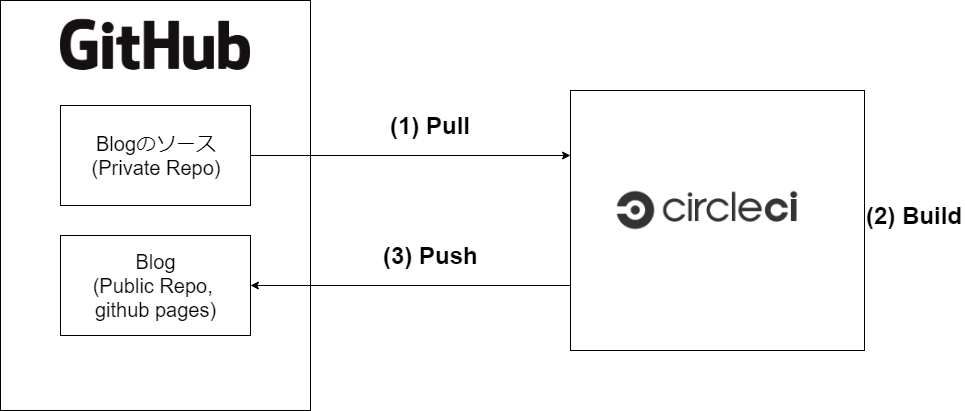

Written by
on
on
Hugoで作成したサイトをCircleCIでデプロイする
このBlogはHugoを使って作成しています。元のMarkdownはGitHubのPrivate Repositoryで管理しています。GitHubへPushすると自動でCircle CIでビルドし、GitHubのGitHub Pages用の別のリポジトリへPushします。
Blog記事作成
Hugoで作成します。公式のQuickStartと、使用しているThemeのTaleのREADMEを読んで作成しました。
また、ソースコードハイライトを有効にするのと、下記のようにGitHubと同じようにソースコードブロックを書けるようにしました。
```C
int main(void) { return 0; }
```config.tomlに下記の記述を追加します。
pygmentsUseClasses = true
pygmentsCodefences = trueあとは、Themeが対応していればソースコードハイライトが有効になります。Themeが対応していない場合は自分でCSSを生成してhtmlに差し込む必要があるようです。(公式、hugo 単体でシンタックスハイライト適用)
今回選択したTaleにはソースコードハイライトが含まれていたのでそのまま使うことにしました。
ビルドとデプロイ
CircleCIを使っています。普段仕事ではGitLab + GitLab CIを使っているので、練習もかねてこの構成です。

CircleCIでのビルドは下記の設定で行っています。
version: 2
jobs:
build:
docker:
- image: cibuilds/hugo:latest
working_directory: ~/hugo
environment:
HUGO_BUILD_DIR: ~/hugo/public
steps:
- run: apk update && apk add git
- checkout
# install git submodules for managing third-party dependencies
- run: git submodule sync && git submodule update --init
# checkout deploy repo
- run: git clone git@github.com:GtTmy/blog.git $HUGO_BUILD_DIR
# build
- run: HUGO_ENV=production hugo -v -d $HUGO_BUILD_DIR
# git setting
- run: cd $HUGO_BUILD_DIR && git config user.name "Circle CI" && git config user.email "circle-ci@local"
# deploy
- run: cd $HUGO_BUILD_DIR && git add -A && git commit -m $CIRCLE_BUILD_URL && git push origin master直したいこと
CircleCIからPushする際に、PushするGitHubのRepositoryのDeploy Tokenを使いたいが、今はUser Tokenを使っている。